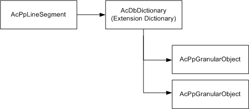

This class generates granular components from an AcPpLineSegment. Utility functions are provided to save the components into the drawing database. AcPpGranularInfo provides the ability to
AcPpGranularInfo can be constructed with a line ID, making it unnecessary to call setLineId. The following code asks the user to select a schematic line from the drawing, and generates granular components:
//C++
//Select an sline
AcDbObjectId idEnt;
ads_name nameEnt;
const ACHAR *strPrompt=(ACRX_T("\nSelect sline to list Granular items and breaks: "));
if (acedEntSel(strPrompt, nameEnt, selPoint)!=RTNORM) return;
acdbGetObjectId(idEnt, nameEnt);
//Generate granular components
AcPpGranularInfo gi(idEnt);
AcPpGranularObjectPtrArray components;
gi.generate(components);generate creates an array of in-memory AcPpGranularObject items. The following code illustrates how to identify AcPpGranularTee components within the array:
//C++
//From AcPpGranularObjectPtrArray components list granular tees
for (int iComponents=0; iComponents<components.length(); iComponents++) {
AcPpGranularTee *pTee=AcPpGranularTee::cast(components[iComponents]);
if (pTee==NULL) continue;
AcDbObjectId idConnectedLine=pTee->connectedLineId();
AcDbObjectPointer<AcPpLineSegment> pSlineConnected(idConnectedLine, AcDb::kForRead);
acutPrintf(ACRX_T("\nTee (%d) connection to %s (%s)."),
pTee->sequenceNumber(),
(const ACHAR *) pSlineConnected->tagValue(),
(const ACHAR *) pSlineConnected->className()
);
}The tag value and project class name of lines connected to the selected sline are printed to the Command: window. In the above sample code, the AcPpGranularObjectPtrArray does not need to be deleted, and does not create any drawing-resident objects because save was not called.
If used, the save function creates a dictionary entry owned by the lineId sline that was used to generate the granular components. A getDictionary function is available on AcPpGranularInfo that allows you to retrieve previously generated and saved granular objects.

A likely reason to store granular objects in the drawing is to provide developers with a mechanism to store custom granular-related information that may later be recovered and published into a DWF file.